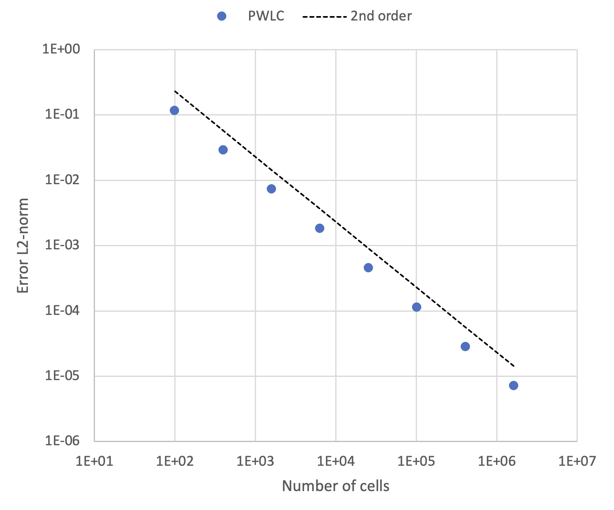

Table of contents
1 Defining a wrapper to call a lua function
To implement a manufactured solution in our PWLC solver from Coding Tutorial 3 - Poisson's problem with PWLC we are required to call a lua-function with spatial coordinates x,y,z. In order to use the lua-console, specifically the lua state, we have to include the headers
#include "ChiLua/chi_lua.h"
When then have to grab the console state from the runtime environment. To do this we add the following code, in the beginning of the program, just below chi::RunBatch
static chi_objects::ChiConsole & console
Next we have to tell the c++ code exactly how to call a lua-function. To this end we define a wrapper using a c++ lambda as shown below. You can define this function where ever you like as long as it can capture the lua state, L. For this tutorial we defined it just before the matrix assembly.
auto CallLuaXYZFunction = [&L](const std::string& lua_func_name,
{
lua_getglobal(L, lua_func_name.c_str());
if (not lua_isfunction(L, -1))
throw std::logic_error("CallLuaXYZFunction attempted to access lua-function, " +
lua_func_name + ", but it seems the function"
" could not be retrieved.");
lua_pushnumber(L, xyz.x);
lua_pushnumber(L, xyz.y);
lua_pushnumber(L, xyz.z);
double lua_return = 0.0;
if (lua_pcall(L,3,1,0) == 0)
{
LuaCheckNumberValue("CallLuaXYZFunction", L, -1);
lua_return = lua_tonumber(L,-1);
}
else
throw std::logic_error("CallLuaXYZFunction attempted to call lua-function, " +
lua_func_name + ", but the call failed." +
xyz.PrintStr());
lua_pop(L,1);
return lua_return;
};
Notice this function takes 2 arguments: a string value representing the lua function's name, and a chi_mesh::Vector3 indicating the real-word XYZ coordinates at which to evaluate the function.
In order to implement a manufactures solution we need a right-hand-side (RHS) function and an actual manufactured solution (MS) function. The RHS function will essentially steer the entire solution towards the manufactured solution. The evaluation of the actual manufactured solution is required in two places, i.e., in the implementation of Dirichlet boundary conditions, and when we compute the L2-norm of the error between our FEM-solution and the manufactured one.
2 Lua functions
The RHS function and the MS function both need to exist within the lua state. We therefore ad the following to the mesh.lua input file.
function MMS_phi(x,y,z)
return math.cos(math.pi*x) + math.cos(math.pi*y)
end
function MMS_q(x,y,z)
return math.pi*math.pi * (math.cos(math.pi*x)+math.cos(math.pi*y))
end
The function MMS_phi is the MS function and the function MMS_q is the RHS function. These functions can be defined anywhere in the input file as long as they are available in the state when solver needs them.
3 Getting guadrature-point real world XYZ
Quadrautre-point real-world positions are stored when the qp_data structure is created. They are accessed with the call chi_math::finite_element::InternalQuadraturePointData::QPointXYZ, taking the quadrature point index as a parameter.
for (size_t qp : qp_data.QuadraturePointIndices())
cell_rhs[i] += CallLuaXYZFunction(qp_data.QPointXYZ(qp),"MMS_q", L) *
qp_data.ShapeValue(i, qp) * qp_data.JxW(qp);
4 Convergence study
The Method of Manufactured Solution (MMS) is often used to verify the rate of convergence of computational methods. In order to determine magnitude of the error of the FEM solution, \( \phi_{FEM} \), compared to the MS, \( \phi_{MMS} \), we need to evaluate the following norm
\[ ||e||_2 = \sqrt{\int_V \biggr( \phi_{MMS}(\mathbf{x}) - \phi_{FEM}(\mathbf{x})\biggr)^2 dV} \]
We again here use the quadrature rules to obtain this integral as
\[ \int_V \biggr( \phi_{MMS}(\mathbf{x}) - \phi_{FEM}(\mathbf{x})\biggr)^2 dV = \sum_c \sum_n^{N_V} w_n \biggr( \phi_{MMS}(\mathbf{x}_n) - \phi_{FEM}(\tilde{\mathbf{x}}_n)\biggr)^2 \ | J(\tilde{\mathbf{x}}_n | \]
for which we use the code
const auto field_wg = ff->GetGhostedFieldVector();
double local_error = 0.0;
for (const auto& cell : grid.local_cells)
{
const auto& cell_mapping = sdm.GetCellMapping(cell);
const size_t num_nodes = cell_mapping.NumNodes();
const auto qp_data = cell_mapping.MakeVolumeQuadraturePointData();
std::vector<double> nodal_phi(num_nodes,0.0);
for (size_t j=0; j < num_nodes; ++j)
{
const int64_t imap = sdm.MapDOFLocal(cell, j);
nodal_phi[j] = field_wg[imap];
}
for (size_t qp : qp_data.QuadraturePointIndices())
{
double phi_fem = 0.0;
for (size_t j=0; j < num_nodes; ++j)
phi_fem += nodal_phi[j] * qp_data.ShapeValue(j, qp);
double phi_true = CallLuaXYZFunction("MMS_phi",qp_data.QPointXYZ(qp));
local_error += std::pow(phi_true - phi_fem,2.0) * qp_data.JxW(qp);
}
}
double global_error = 0.0;
MPI_Allreduce(&local_error,
&global_error,
1, MPI_DOUBLE,
MPI_SUM,
MPI_COMM_WORLD);
global_error = std::sqrt(global_error);
chi::log.
Log() <<
"Error: " << std::scientific << global_error
<< " Num-cells: " << grid.GetGlobalNumberOfCells();
LogStream Log(LOG_LVL level=LOG_0)
static chi_objects::ChiLog & log
Notice that we grab the nodal values of \( \phi_{FEM} \) before we loop over quadrature points. We then use these nodal values within the quadrature-point loop to construct \( \phi_{FEM}(\tilde{\mathbf{x}}_n) \) as
\[ \phi_{FEM}(\tilde{\mathbf{x}}_n) = \sum_j \phi_j b_j(\tilde{\mathbf{x}}_n) \]
with the code
for (size_t j=0; j < num_nodes; ++j)
phi_fem += nodal_phi[j] * qp_data.ShapeValue(j, qp);
Notice also that we first have to compute a local error, from the cells that are on the local partition. This is then followed by an MPI_Allreduce, with the MPI_SUM operation, to gather all the local error values into a single global error value. This is done via the code
double global_error = 0.0;
MPI_Allreduce(&local_error,
&global_error,
1, MPI_DOUBLE,
MPI_SUM,
MPI_COMM_WORLD);
global_error = std::sqrt(global_error);
With this code in-place we can run the program several times with a different amount of cells, which provides us with the data below:

The complete program
#include "ChiPhysics/FieldFunction/fieldfunction2.h"
#include "ChiLua/chi_lua.h"
int main(
int argc,
char* argv[])
{
const auto& grid = *grid_ptr;
chi::log.
Log() <<
"Global num cells: " << grid.GetGlobalNumberOfCells();
typedef std::shared_ptr<chi_math::SpatialDiscretization>
SDMPtr;
const auto& sdm = *sdm_ptr;
const auto& OneDofPerNode = sdm.UNITARY_UNKNOWN_MANAGER;
const size_t num_local_dofs = sdm.GetNumLocalDOFs(OneDofPerNode);
const size_t num_globl_dofs = sdm.GetNumGlobalDOFs(OneDofPerNode);
chi::log.
Log() <<
"Num local DOFs: " << num_local_dofs;
chi::log.
Log() <<
"Num globl DOFs: " << num_globl_dofs;
const auto n = static_cast<int64_t>(num_local_dofs);
const auto N = static_cast<int64_t>(num_globl_dofs);
Mat A;
Vec x,b;
std::vector<int64_t> nodal_nnz_in_diag;
std::vector<int64_t> nodal_nnz_off_diag;
sdm.BuildSparsityPattern(nodal_nnz_in_diag,nodal_nnz_off_diag, OneDofPerNode);
nodal_nnz_in_diag,
nodal_nnz_off_diag);
auto CallLuaXYZFunction = [&L](const std::string& lua_func_name,
{
lua_getglobal(L, lua_func_name.c_str());
if (not lua_isfunction(L, -1))
throw std::logic_error("CallLuaXYZFunction attempted to access lua-function, " +
lua_func_name + ", but it seems the function"
" could not be retrieved.");
lua_pushnumber(L, xyz.x);
lua_pushnumber(L, xyz.y);
lua_pushnumber(L, xyz.z);
double lua_return = 0.0;
if (lua_pcall(L,3,1,0) == 0)
{
LuaCheckNumberValue("CallLuaXYZFunction", L, -1);
lua_return = lua_tonumber(L,-1);
}
else
throw std::logic_error("CallLuaXYZFunction attempted to call lua-function, " +
lua_func_name + ", but the call failed." +
xyz.PrintStr());
lua_pop(L,1);
return lua_return;
};
for (const auto& cell : grid.local_cells)
{
const auto& cell_mapping = sdm.GetCellMapping(cell);
const auto qp_data = cell_mapping.MakeVolumeQuadraturePointData();
const auto cell_node_xyzs = cell_mapping.GetNodeLocations();
const size_t num_nodes = cell_mapping.NumNodes();
VecDbl cell_rhs(num_nodes, 0.0);
for (size_t i=0; i<num_nodes; ++i)
{
for (size_t j=0; j<num_nodes; ++j)
{
double entry_aij = 0.0;
for (size_t qp : qp_data.QuadraturePointIndices())
{
entry_aij +=
qp_data.ShapeGrad(i, qp).Dot(qp_data.ShapeGrad(j, qp)) *
qp_data.JxW(qp);
}
Acell[i][j] = entry_aij;
}
for (size_t qp : qp_data.QuadraturePointIndices())
cell_rhs[i] += CallLuaXYZFunction("MMS_q",qp_data.QPointXYZ(qp)) *
qp_data.ShapeValue(i, qp) * qp_data.JxW(qp);
}
std::vector<bool> node_boundary_flag(num_nodes, false);
const size_t num_faces = cell.faces.size();
for (size_t f=0; f<num_faces; ++f)
{
const auto& face = cell.faces[f];
if (face.has_neighbor) continue;
const size_t num_face_nodes = face.vertex_ids.size();
for (size_t fi=0; fi<num_face_nodes; ++fi)
{
const uint i = cell_mapping.MapFaceNode(f,fi);
node_boundary_flag[i] = true;
}
}
std::vector<int64_t> imap(num_nodes, 0);
for (size_t i=0; i<num_nodes; ++i)
imap[i] = sdm.MapDOF(cell, i);
for (size_t i=0; i<num_nodes; ++i)
{
if (node_boundary_flag[i])
{
MatSetValue(A, imap[i], imap[i], 1.0, ADD_VALUES);
double bval = CallLuaXYZFunction("MMS_phi",cell_node_xyzs[i]);
VecSetValue(b, imap[i], bval, ADD_VALUES);
}
else
{
for (size_t j=0; j<num_nodes; ++j)
{
if (not node_boundary_flag[j])
MatSetValue(A, imap[i], imap[j], Acell[i][j], ADD_VALUES);
else
{
double bval = CallLuaXYZFunction("MMS_phi",cell_node_xyzs[j]);
VecSetValue(b, imap[i], -Acell[i][j]*bval, ADD_VALUES);
}
}
VecSetValue(b, imap[i], cell_rhs[i], ADD_VALUES);
}
}
}
MatAssemblyBegin(A, MAT_FINAL_ASSEMBLY);
MatAssemblyEnd(A, MAT_FINAL_ASSEMBLY);
VecAssemblyBegin(b);
VecAssemblyEnd(b);
auto petsc_solver =
A,
"PWLCDiffSolver",
KSPCG,
PCGAMG,
1.0e-6,
1000);
KSPSolve(petsc_solver.ksp,b,x);
std::vector<double> field;
sdm.LocalizePETScVector(x,field,OneDofPerNode);
KSPDestroy(&petsc_solver.ksp);
VecDestroy(&x);
VecDestroy(&b);
MatDestroy(&A);
auto ff = std::make_shared<chi_physics::FieldFunction>(
"Phi",
sdm_ptr,
);
ff->UpdateFieldVector(field);
ff->ExportToVTK("CodeTut4_PWLC");
const auto field_wg = ff->GetGhostedFieldVector();
double local_error = 0.0;
for (const auto& cell : grid.local_cells)
{
const auto& cell_mapping = sdm.GetCellMapping(cell);
const size_t num_nodes = cell_mapping.NumNodes();
const auto qp_data = cell_mapping.MakeVolumeQuadraturePointData();
std::vector<double> nodal_phi(num_nodes,0.0);
for (size_t j=0; j < num_nodes; ++j)
{
const int64_t jmap = sdm.MapDOFLocal(cell, j);
nodal_phi[j] = field_wg[jmap];
}
for (size_t qp : qp_data.QuadraturePointIndices())
{
double phi_fem = 0.0;
for (size_t j=0; j < num_nodes; ++j)
phi_fem += nodal_phi[j] * qp_data.ShapeValue(j, qp);
double phi_true = CallLuaXYZFunction("MMS_phi",qp_data.QPointXYZ(qp));
local_error += std::pow(phi_true - phi_fem,2.0) * qp_data.JxW(qp);
}
}
double global_error = 0.0;
MPI_Allreduce(&local_error,
&global_error,
1, MPI_DOUBLE,
MPI_SUM,
MPI_COMM_WORLD);
global_error = std::sqrt(global_error);
chi::log.
Log() <<
"Error: " << std::scientific << global_error
<< " Num-cells: " << grid.GetGlobalNumberOfCells();
return 0;
}
std::vector< VecDbl > MatDbl
std::vector< double > VecDbl
int main(int argc, char **argv)
static std::shared_ptr< SpatialDiscretization_PWLC > New(const chi_mesh::MeshContinuum &in_grid, finite_element::SetupFlags setup_flags=finite_element::NO_FLAGS_SET, QuadratureOrder qorder=QuadratureOrder::SECOND, CoordinateSystemType in_cs_type=CoordinateSystemType::CARTESIAN)
chi_mesh::MeshContinuumPtr & GetGrid() const
static int Initialize(int argc, char **argv)
static int RunBatch(int argc, char **argv)
void InitMatrixSparsity(Mat &A, const std::vector< int64_t > &nodal_nnz_in_diag, const std::vector< int64_t > &nodal_nnz_off_diag)
PETScSolverSetup CreateCommonKrylovSolverSetup(Mat ref_matrix, const std::string &in_solver_name="KSPSolver", const std::string &in_solver_type=KSPGMRES, const std::string &in_preconditioner_type=PCNONE, double in_relative_residual_tolerance=1.0e-6, int64_t in_maximum_iterations=100)
Mat CreateSquareMatrix(int64_t local_size, int64_t global_size)
Vec CreateVector(int64_t local_size, int64_t global_size)
std::shared_ptr< SpatialDiscretization > SDMPtr
MeshHandler & GetCurrentHandler()